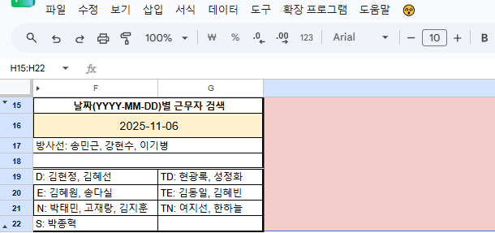
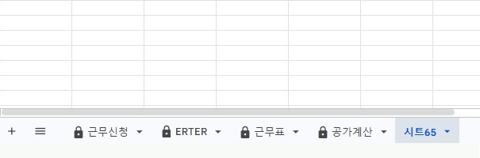
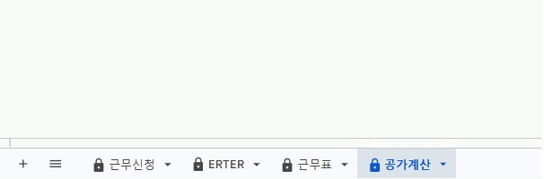
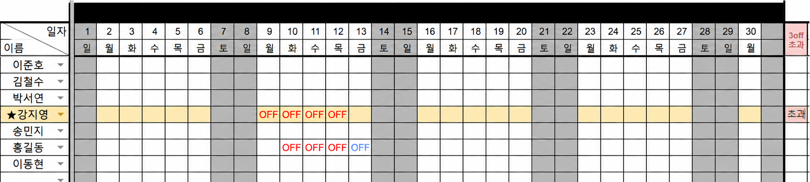

WORK SCHEDULE · UPDATE
근무표 업데이트 안내
2027년
날짜별 근무검색
‘공가계산’ 시트 F16셀에 날짜 입력 → 일정 및 근무자 확인

시트 생성 자동 삭제
‘시트’ 생성 시 자동 삭제


근무 신청 변경 안내
‘★이름’ 변경 시
본인 행 (노란색) 확인 가능
본인 행 (노란색) 확인 가능
근무 신청 시
자동 색 변경
자동 색 변경
색으로 카운트(3개 초과 시)

근무 신청 시
자동 색 변경
자동 색 변경
작업 처리 시간 안내
로딩 중
모든 작업 시 로딩 시간이 소요됩니다.